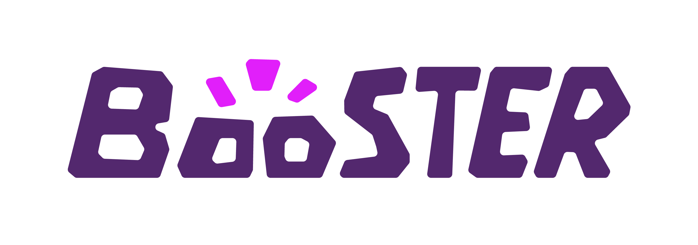
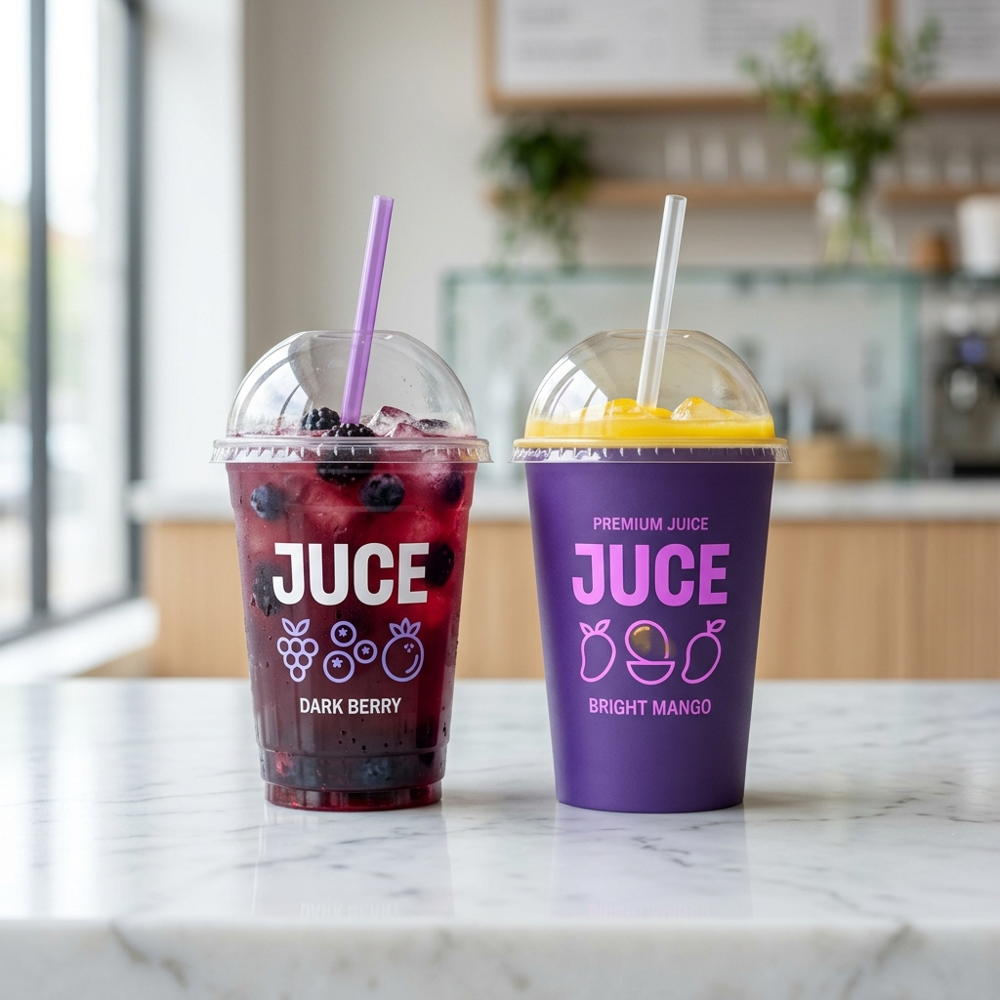

Mission
Reposition Booster Juice as a daily nourishment brand with clearer nutrition, visible sourcing, and more responsible systems.

Guidelines V2.0
A living system for transparent daily nourishment.
Booster Source repositions Booster Juice from an occasional smoothie stop into a transparent daily nourishment brand: useful, visible, responsible, and built around everyday routines.
Mission
Reposition Booster Juice as a daily nourishment brand with clearer nutrition, visible sourcing, and more responsible systems.
Vision
Become Canada's most trusted and transparent daily nourishment brand.
Purpose
Help people make better daily food choices by showing what nourishes them, where it comes from, and how it is made more responsibly.
Clarity
Make choices easier to understand and easier to navigate.
Nourishment
Focus on real daily needs, not vague wellness language.
Transparency
Show what is inside the product and what is behind it.
Momentum
Fit active routines with speed, ease, and repeat relevance.

Primary Wordmark
The main identifier for brand recognition, digital headers, and high-visibility touchpoints.

Packaging
Transparent surfaces let product colour carry richness while the brand system stays disciplined.

Colour System
A controlled purple system supports real ingredients, photography, and useful digital contrast.
For Design Work
Start with the Visuals section. Use the logo rules, colour modules, type testers, packaging guidance, and artifact lists before producing new campaign or product work.
For Strategic Work
Start with Strategy and Voice. The system is grounded in clarity, nutrition visibility, sourcing transparency, and responsibility that can be proven in real touchpoints.